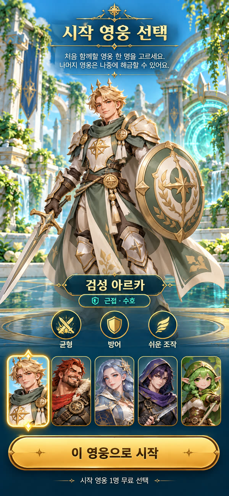
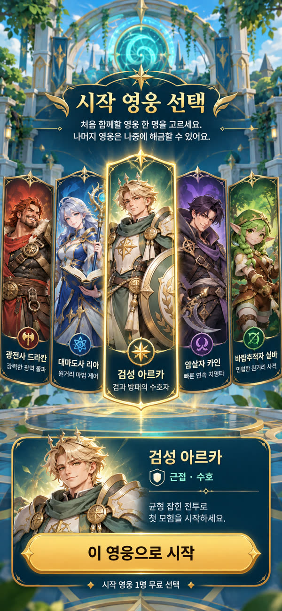
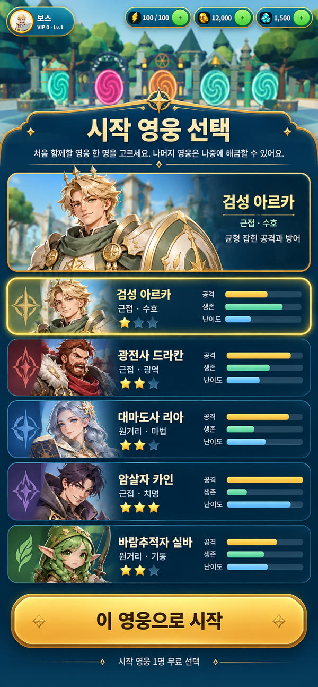
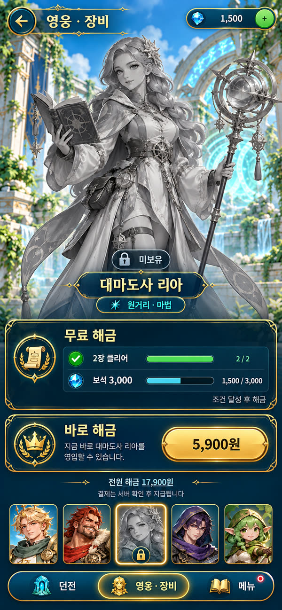
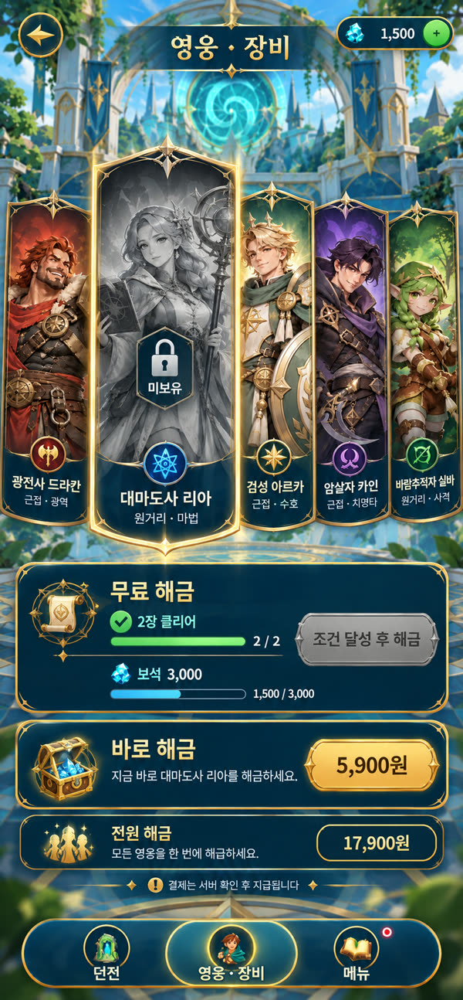
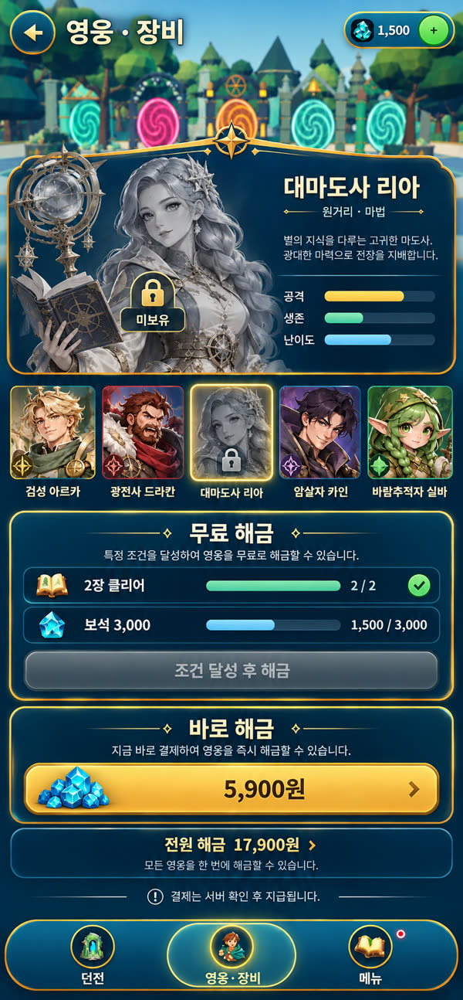

대상 폰으로 짧게 던전을 도는 액션 RPG 플레이어 · 플랫폼 Android/모바일 브라우저 가로, 데스크톱 브라우저 · 화면 1280x590, 844x390, 800x360, 1440x900
잠금 2026-10-24 02:06 UTC · 5a2d35d81cc3
컨셉 시안
C1 콤보 배지 옆 알약형 연속 처치선택C2 상단 중앙 지역명 아래 얇은 리본C3 스킬 버튼 옆 원형 메달C4 따뜻한 손그림풍 고대 서고 던전선택C5 달빛 크리스털 폐허C6 장난감풍 로우폴리 석조 던전C7 오른쪽 세로 추천 던전 패널 + 하단 3탭 도크C8 하단 던전 카드 캐러셀 + 왼쪽 세로 탭 + 큰 출격 버튼선택C9 흰 대리석·금 별 나침반·크리스털 책장 별빛 서고선택C10 밤하늘 별자리 선 서고C11 구름 위 발코니 서고C12 고대 성채 석조 아치: 쐐기돌·룬 음각·이끼선택C13 룬 단조 요새: 금속 띠·깃발·결정 왕관C14 성소: 대리석 꼬임 기둥·떠다니는 룬석·천C15 던파식 세로 스킬 트리 + SP + 초기화선택C16 스킬 카드 레일C17 로비 유지 사이드 시트선택C18 커뮤니티 홀(친구·프로필)C19 명예의 전당 중심

C20 큰 전신 쇼케이스 + 하단 초상 탭

C21 타로 카드 부채꼴

C22 상단 상세 + 비교 목록(공격·생존·난이도)선택

C23 잠긴 영웅 상세 시안(c1 방향 짝)

C24 잠긴 영웅 상세 시안(c2 방향 짝)
화면
battle-hud · 전투 HUD (연속 처치 재배치)
시안
구현 화면 아직 없음
구현 화면
비교 체크포인트화면 중앙(가로 30~70%, 세로 25~75%)에 연속 처치 카드가 없다연속 처치는 35 COMBO 배지 오른쪽에 같은 높이의 알약형으로 붙는다금색 숫자와 작은 글자 "연속 처치 · 사냥 본능", 보라 테두리 발광20연속 이상은 붉은 테두리로 바뀐다5·10·20·30 알림도 중앙을 가리지 않는다나머지 HUD 위치·크기는 기존 그대로
실제 문구["연속 처치","사냥 본능","광란","전장의 지배자"]
어려운 부분과 구현 방법oath-visual.css, battle-readability.css, mobile-combat.css에 kill-streak 위치 규칙이 겹쳐 있다: 한 규칙으로 정리좁은 화면(800x360)에서 알약이 HP 패널과 겹치면 콤보 배지 아래 줄로 내리는 대체 배치
A1 전투 중 연속 처치가 올라가도 화면 중앙 전투 영역에 카드가 뜨지 않고 콤보 배지 옆 알약에 숫자와 단계가 보인다 · 브라우저 1280x590·844x390·800x360 가로 실제 전투 캡처와 Android 실기기
A2 5·10·20 연속 처치 알림이 적과 영웅을 가리지 않는다 · 같은 전투에서 20연속 이상 처치 캡처
skill-aim · 와일드 리프트식 스킬 조준
시안
구현 화면 아직 없음
구현 화면
비교 체크포인트스킬 버튼을 누른 채 끌면 영웅 발밑에 반투명 사거리 원영웅에서 끈 방향으로 빛나는 하늘색 직선 레인과 화살촉스킬 버튼 위에 작은 드래그 원미니맵 왼쪽에 빨간 원형 취소(X) 구역이 조준 중에만 보인다조준 중에도 이동 조이스틱과 HUD는 그대로
실제 문구["취소"]
어려운 부분과 구현 방법지면 표시는 재사용 메시 1세트(링·레인·부채꼴·원)로 만들고 매 프레임 할당 없이 위치·회전만 갱신app.step(dt) 결정성: 입력은 조준 벡터를 기존 press 경로에 실어 보내고 시뮬레이션은 같은 방향을 쓴다AUTO 모드와 키보드 입력은 기존 동작 유지
A3 스킬 버튼을 끄는 동안 사거리 원과 방향 레인이 보이고 손을 떼면 그 방향으로 스킬이 나간다 · 모바일 터치 에뮬레이션 드래그와 Android 실기기 터치
A6 직선·부채꼴·지점 스킬의 지면 표시가 실제로 맞는 범위와 같다 · 디버그 판정 오버레이와 표시 비교 캡처
dungeon-map-art · 던전 맵 그래픽(지역별 환경 아트)
시안
구현 화면 아직 없음
구현 화면
비교 체크포인트바닥은 밝고 읽기 쉬운 석재 타일(마모된 모서리·틈새 이끼), 벽·책장은 어둡게바닥의 호박색 룬 원과 테두리 무늬벽면 책장·스테인드글라스·촛불, 창에서 들어오는 빛줄기먼지 입자, 따뜻한 색온도전투 중앙은 장식 없이 비우고 소품은 가장자리
실제 문구[]
어려운 부분과 구현 방법큰 반복 바닥은 생성 텍스처(타일·룬)와 베이크 AO로, 책장·창·촛대는 Tripo 소품 → Blender 헤드리스 → 인스턴싱빛줄기는 가산 혼합 평면, 먼지는 인스턴스 파티클로 모바일 프레임 예산 안지역마다 C5·C6 방향을 별도 시안 묶음으로 확장
A9 별빛 서고 지역 전투 화면이 시안 C4처럼 따뜻한 서고 환경으로 보이고, 전투 중앙의 적과 영웅이 바닥과 대비되어 또렷하다 · 개발 서버·정식 호스트 1280x590·844x390 전투 캡처와 blueprint shot 비교, 모바일 프레임 시간
lobby-screen · 로비 화면(던전 선택·출격)
시안구현 화면 · 2026-10-18 11:09 · 1280x590 개발 서버 b81c1b5
이 구현 화면은 이전 설계도 버전(1f15de4e43b4)에 대해 찍었습니다
비교 체크포인트영웅은 왼쪽 중앙에 가려지지 않고 서 있다왼쪽 가장자리 세로 탭(던전, 영웅·장비, 메뉴)과 빨간 알림 점오른쪽 위 추천 던전 상세(그림, 이름, 설명, 입장 에너지, 주요 보상)오른쪽 아래 던전 카드 캐러셀(그림, 이름, 에너지 비용, 넘기기 화살표)오른쪽 아래 모서리 큰 원형 금색 출격 버튼(교차 검)금색 장식 테두리, 남색·양피지 톤
실제 문구["던전","영웅·장비","메뉴","추천 던전","입장 에너지","주요 보상","출격"]
어려운 부분과 구현 방법카드 그림은 기존 던전 썸네일(public/img) 재사용, 없는 지역은 생성기존 출격 준비 흐름(에너지·보상·저장)은 그대로 버튼만 연결844x390·800x360에서 캐러셀 카드 수를 줄이고 영웅이 가려지지 않게
A10 로비에서 던전 카드를 넘겨 고르고 큰 출격 버튼으로 기존 출격 준비 흐름에 들어가며, 어느 화면 크기에서도 영웅이 UI에 가려지지 않는다 · 로비 1280x590·844x390·800x360 캡처, 카드 선택·출격 실제 터치, blueprint shot 비교
star-archive-room · 별빛 서고 전투 방
시안구현 화면 · 2026-10-18 12:04 · 1280x590 개발 서버 556aaaf 실제 진입
이 구현 화면은 이전 설계도 버전(9ed6cdc41d3d)에 대해 찍었습니다
비교 체크포인트흰·옅은 파랑 대리석 타일 바닥에 금색 줄눈전투 공간 중앙 아래 큰 금 별 나침반 장식(남색 원판)양쪽 벽 흰 대리석 책장과 빛나는 청색 크리스털 책모서리 투명한 청색 크리스털 무리뒤쪽 벽 위 금색 혼천의(아밀러리 구)위에서 내리는 차가운 달빛과 은은한 청색 번짐전투 중앙은 장식 없이 바닥만
실제 문구[]
어려운 부분과 구현 방법바닥은 public/textures/star-archive/floor-marble.webp 반복, 나침반은 rosette.webp 데칼 평면책장 면은 crystal-books.webp를 기존 frost 책장 상자에 입히고 인스턴싱크리스털은 crystal-cluster.webp 빌보드 또는 저폴리 기하+가산 발광혼천의는 토러스 3~4개 병합 메시모바일 프레임 p95 27ms 이하 유지(현재 기준)
A11 별빛 서고 전투 방이 시안 C9처럼 흰 대리석 바닥·금 나침반·크리스털 책장·혼천의로 보이고 적·영웅이 바닥과 대비되어 또렷하며 프레임이 기존보다 크게 나빠지지 않는다 · 실제 로비→출격→전투 캡처 1280x590·844x390와 blueprint shot, 프레임 p50·p95
skill-tree-screen · 스킬 트리 (SP 습득·강화·초기화)
시안
구현 화면 아직 없음
구현 화면
비교 체크포인트왼쪽 열: 영웅 초상, 직업명, Lv, 큰 금색 원형 SP 카운터("남은 스킬 포인트"), 하단 스킬 초기화 버튼(두루마리 아이콘+보석 가격 또는 보유 초기화서 수)가운데: 위쪽 기본 스킬 4개 줄, 아래로 금색 화살표 연결선을 따라 각성 스킬이 Lv.10/20/35/50 관문 순서로 내려간다스킬 칸: 정사각 아이콘, 금테(습득)·회색+자물쇠(미해금), 아래 레벨 n/10 알약과 + 버튼오른쪽: 선택 스킬 상세(아이콘, 이름, Lv n/10, 설명, 피해 배율 현재→다음, 재사용 대기 현재→다음, 필요 조건 캐릭터 레벨·SP), 하단 큰 금색 "습득 (SP n)" 또는 "강화 (SP n)" 버튼남색 바탕, 금색 테두리, 상단 보석·골드 바각 칸 탭 = 오른쪽 상세 갱신, + 또는 큰 버튼 = SP 사용
실제 문구["스킬 트리","남은 스킬 포인트","스킬 초기화","습득","강화","피해 배율","재사용 대기시간","다음 레벨 효과","필요 조건","캐릭터 레벨","스킬 포인트","최대 레벨"]
어려운 부분과 구현 방법844x390에서 3열이 다 들어가야 한다: 가운데 트리는 4열×최대 3행(8개 스킬: 기본 4 + 각성 4)이라 이미지보다 행이 적다. 이미지의 4행 격자 대신 기본 4 + 각성 4의 2행 구조에 관문 레벨 라벨을 단다이미지 속 "다음 레벨 미리보기" 영상 칸은 스킬 아이콘 확대+VFX 색 그라디언트 카드로 구현한다초상은 기존 /img/tll/*-original-v1.webp를 쓴다
A20 영웅 레벨이 오르면 SP가 늘고, 잠긴 각성 스킬은 관문 레벨 도달 후 SP 2로 습득해야 전투 Q/E에 쓸 수 있다 · 브라우저 844x390·1280x590 실제 클릭, 저장 후 새로고침 유지
A21 스킬 초기화로 SP가 모두 돌아오고 각성 스킬은 미습득으로 돌아간다. Lv.20 이상은 초기화서가 1개 줄고, 없으면 상점으로 안내된다 · 같은 화면 실제 클릭
transcend-screen · 영웅 초월 (SR→SSR→SSSR)
시안
구현 화면 아직 없음
구현 화면
비교 체크포인트가운데 영웅 일러스트와 원형 제단, 아래 SR(파랑)→SSR(보라)→SSSR(분홍·무지개 발광) 결정 3개와 화살표, 현재 등급 결정이 가장 밝다왼쪽: 초월 전후 능력치 비교표(공격력, 체력, 스킬 피해, 재사용 대기, 궁극기 충전)와 초록 화살표오른쪽: 필요 재료(영웅 조각 n/m, 초월석 n/m, 골드) 부족 수치는 붉게, 큰 자홍 "초월하기" 버튼, 그 아래 금색 "초월 패키지" 상점 바로가기최고 등급이면 버튼이 "최고 등급"으로 잠긴다
실제 문구["영웅 초월","초월 전후 능력치 비교","초월에 필요한 재료","영웅 조각","초월석","골드","초월하기","초월 패키지","최고 등급"]
어려운 부분과 구현 방법하단 탭바는 기존 로비 탭을 그대로 쓴다(새로 만들지 않는다)결정 3개는 CSS 다이아몬드+발광 그라디언트로 그린다
A22 재료가 충분하면 초월하기로 등급이 오르고 전투력·스킬 피해·재사용 대기가 바뀐 값으로 보이고 전투에서 실제로 적용된다 · 브라우저 844x390 실제 클릭 + 전투 진입 후 쿨타임 표시
community-chat-sheet · 커뮤니티 사이드 시트: 광장 채팅·파티 모집
시안
구현 화면 아직 없음
구현 화면
비교 체크포인트오른쪽 45% 폭 남색 패널, 파란 헤더 "커뮤니티"와 닫기 X아이콘+글자 탭 5개(광장 채팅·친구·파티 모집·명예의 전당·소식·제보), 선택 탭은 금색 테두리채널 알약 "광장 1 · 87명"과 펼침 화살표채팅 줄: 영웅 초상 원형, 금색 칭호 배지, 이름#태그(회색 태그), 시각 오른쪽서버 최초 공지는 금색 테두리 줄과 왕관 아이콘모집 카드: 던전 그림 썸네일, [모집] 제목, 인원·조건, 주황 "참가" 버튼빠른 문구 칩 줄과 이모지 버튼입력칸 + 주황 "전송" 버튼왼쪽은 실제 로비가 그대로 보이고 조작 가능
어려운 부분과 구현 방법844x390에서 패널 폭 45%(약 380pt)일 때 탭 5개 글자 줄바꿈 → 아이콘 위 글자 11px, 좁으면 아이콘만키보드가 올라오면 입력칸이 가려짐 → visualViewport로 패널 높이 조정초상은 기존 HEROES[].portrait 재사용
A24 두 브라우저(서로 다른 기기 키)가 광장 1에서 서로의 메시지를 1초 안에 보고, 금칙어는 *로, 링크는 [링크]로 바뀌며, 도배는 안내와 함께 막힌다 · wrangler dev 로컬 + 실제 blade.tllhouse.com, 844x390·1440x900 캡처
community-friends · 친구·내 프로필(넓은 화면)
시안
구현 화면 아직 없음
구현 화면
비교 체크포인트왼쪽 세로 탭 레일, 선택 탭 금색 테두리친구 줄: 초상, 이름#태그, 레벨, 초록 점+현재 위치, 파란 "귓속말"·주황 "초대" 버튼"친구 수 12 / 100" 헤더 오른쪽친구 추가 입력칸 placeholder "닉네임#1234"와 주황 "요청"받은 요청 빨간 숫자 배지, 수락(파랑)/거절(남색)내 프로필: 큰 초상, 이름#태그 편집 연필, 금색 월계관 메달 "창립 모험가 No.{n}"획득한 칭호 칩(색 테두리), 모두 보기"기록 보호하기 · 구글 연동" 파란 버튼, 내 친구 코드 복사
실제 문구["친구","친구 수 {n} / 100","귓속말","초대","친구 추가","닉네임#1234","요청","받은 요청","수락","거절","내 프로필","창립 모험가 No.{n}","획득한 칭호","모두 보기","기록 보호하기 · 구글 연동","내 친구 코드","복사"]
어려운 부분과 구현 방법창립 메달은 CSS 그라디언트+기존 금속 질감, 월계관은 SVG구글 연동은 GOOGLE_CLIENT_IDS가 비면 버튼 자리에 "준비 중" 안내
A25 닉네임#태그로 친구 요청→상대 수락→서로 온라인·위치가 보이고, 귓속말과 파티 초대가 도착하며 초대의 참가 버튼이 기존 파티 방에 들어간다 · 두 브라우저 실제 입력
community-fame · 명예의 전당
시안
구현 화면 아직 없음
구현 화면
비교 체크포인트상단 금색 월계관 배너 "명예의 전당"왼쪽 던전 카드(원화 썸네일, 이름, "최초 정복 · 이름#태그"), 선택 카드 금색 테두리가운데 1·2·3위 시상대(금·은·동 빛, 왕관 숫자, 초상, 날짜, 클리어 시간)선구자 4~10위 목록과 최단 기록 TOP 3오른쪽 서버 정복 순위(순위 메달, 이름, "12/12 정복")아래 금색 "내 순위" 강조 줄맨 아래 한 줄 광장 채팅 띠와 미확인 배지
실제 문구["명예의 전당","던전 목록","최초 정복 · {이름}","선구자 4 ~ 10위","최단 기록 TOP 3","서버 정복 순위","{n}/{total} 정복","내 순위","아직 정복자가 없습니다 — 첫 번째가 되어 보세요"]
어려운 부분과 구현 방법844x390에서는 3단이 좁음 → 1440 이상 3단, 폰 가로는 던전 목록을 가로 스크롤 띠로 바꾸고 시상대+순위 2단아무도 안 깬 던전은 빈 시상대에 "아직 정복자가 없습니다 — 첫 번째가 되어 보세요"
A27 명예의 전당에 던전별 최초 1~3위 시상대, 4~10위, 최단 기록, 서버 정복 순위, 내 순위가 실제 기록으로 표시된다 · 1440x900·844x390 캡처, 시안 C14 비교
community-board · 소식·제보 게시판
시안
구현 화면 아직 없음
구현 화면
비교 체크포인트분류 칩: 전체·공지·업데이트·버그 제보·업데이트 희망·아이디어·질문(선택 금색)최신순/공감순 토글고정 공지 카드 금색 테두리와 핀글 카드: 분류 색 배지, 제목, 요약 두 줄, 작성자·시각, 공감·댓글 수상태 칩: 검토 중(노랑)·반영 예정(보라)·반영 완료(초록)·답변 완료(회색)오른쪽 글 상세, 금색 "개발자 답변" 상자주황 "글쓰기" 큰 버튼"디스코드에서도 함께해요" + 디스코드 참여 버튼
어려운 부분과 구현 방법버그 제보 글쓰기 때 버전·기기·화면 크기·현재 장면·fps를 자동 첨부(사용자에게 미리 보여 줌)디스코드 링크는 GameConfig.discordInvite가 있을 때만 표시
A28 버그 제보 글에 진단 정보가 자동 첨부되고, 공감 토글·댓글·관리자 상태 변경·개발자 답변이 반영되며, 디스코드 웹훅이 설정되면 새 글이 디스코드에 올라간다 · 두 브라우저 + 관리자 id, 웹훅은 설정된 경우만
starter-select · 첫 실행 시작 영웅 선택(정책 2 새 저장만)
시안
구현 화면 아직 없음
구현 화면
비교 체크포인트상단 남색 판에 금색 장식 제목 "시작 영웅 선택"과 안내 두 줄상단 상세 판: 고른 영웅 큰 초상, 이름(금색), 역할, 한 줄 특징5줄 목록: 직업색 문양 칸, 초상, 이름·역할, 난이도 별 3개, 공격·생존·난이도 막대고른 줄은 금색 테두리 발광하단 큰 금색 버튼 "이 영웅으로 시작"과 "시작 영웅 1명 무료 선택"가로 844x390·데스크톱은 상세 왼쪽 + 목록 오른쪽 2열
실제 문구["시작 영웅 선택","처음 함께할 영웅 한 명을 고르세요. 나머지 영웅은 나중에 해금할 수 있어요.","이 영웅으로 시작","시작 영웅 1명 무료 선택","공격","생존","난이도"]
어려운 부분과 구현 방법막대 수치는 HEROES base 스탯에서 정규화해 계산(임의 숫자 금지)배경 로비 3D는 그대로 두고 판만 반투명현재 구현(d3eeee4)은 3열 카드 격자 → 이 시안으로 바꾸는 후속 작업 필요
A33 localStorage를 비운 새 저장에서 튜토리얼 전에 시작 영웅 선택이 한 번 뜨고, 고른 영웅 1명만 소유한다 · Playwright 390x844·844x390·1280x800
hero-locked-detail · 영웅 탭: 잠긴 영웅 상세·해금

시안
구현 화면 아직 없음
구현 화면
비교 체크포인트상세 판: 회색조 초상 + 자물쇠 "미보유" 배지, 이름·역할·소개·막대 3개초상 줄 5칸, 미보유는 회색 + 자물쇠"무료 해금" 판: 조건 줄(진행 막대·n/m·체크), 보석 줄(보유/필요), 버튼(미충족이면 회색 "조건 달성 후 해금")"바로 해금" 판: 큰 금색 가격 버튼(결제 켜짐일 때만 가격 표시, 아니면 "준비 중")"전원 해금 17,900원" 보조 판(결제 켜짐일 때만)하단 안내 "결제는 서버 확인 후 지급됩니다."
실제 문구["미보유","무료 해금","바로 해금","전원 해금","조건 달성 후 해금","결제는 서버 확인 후 지급됩니다."]
어려운 부분과 구현 방법가격 문구는 app.heroPurchase.available()일 때만 노출(가격 공개 전 대표님 확인)회색조는 CSS filter grayscale로
A35 미보유 영웅은 출격·선택 불가, 무료 해금 조건 충족 시 보석으로 열리고 결제 꺼짐 상태에서 가격이 보이지 않는다 · Playwright 390x844
그래프
flowchart LR
n0["battle-hud 전투 HUD (연속 처치 재배치)"]:::screen
n1["kill-streak-pill 연속 처치 알약 표시"]:::component
n2["skill-aim 와일드 리프트식 스킬 조준"]:::screen
n3["aim-input 드래그 조준 입력"]:::system
n4["skill-shape-data 스킬별 조준 모양 데이터"]:::data
n5["skill-cast 기존 스킬 시전(Player.tryCastSkill)"]:::system
n6["lobby-hero-pose 로비 영웅 대기 자세 좌우 균형"]:::asset
n7["asset-foundry TLL-Asset-Foundry 재사용 라이브러리"]:::system
n8["dungeon-map-art 던전 맵 그래픽(지역별 환경 아트)"]:::screen
n9["lobby-screen 로비 화면(던전 선택·출격)"]:::screen
n10["lobby-hero-idle 로비 영웅 대기 자세"]:::asset
n11["star-archive-room 별빛 서고 전투 방"]:::screen
n12["citadel-gate-structure 성채 관문 공통 구조물(기둥·아치·받침)"]:::component
n13["skill-tree-screen 스킬 트리 (SP 습득·강화·초기화)"]:::screen
n14["transcend-screen 영웅 초월 (SR→SSR→SSSR)"]:::screen
n15["grade-rules 등급 규칙 src/data/hero-grades.js"]:::rule
n16["skill-point-rules SP 규칙 src/data/skill-tree.js"]:::rule
n17["monetization 과금 흐름"]:::flow
n18["community-chat-sheet 커뮤니티 사이드 시트: 광장 채팅·파티 모집"]:::screen
n19["community-friends 친구·내 프로필(넓은 화면)"]:::screen
n20["community-fame 명예의 전당"]:::screen
n21["community-board 소식·제보 게시판"]:::screen
n22["battle-chat-ticker 전투 중 채팅 띠"]:::component
n23["social-hub tll-social 서버(Durable Object SocialHub, SQLite, 절전형 WebSocket)"]:::system
n24["social-identity 게스트 신원(기기 키) + player_keys + account_links"]:::data
n25["google-link 구글 연동(선택): /auth/link·recover·unlink, GOOGLE_CLIENT_IDS 없으면 꺼짐"]:::api
n26["first-clear-flow 런 티켓 → 클리어 → 최초 순위·칭호 → 전 서버 공지·디스코드"]:::flow
n27["party-recruit-flow 파티 만들기 → 모집 게시 → 광장 카드 → 참가(기존 PartySession.join) / 친구 초대"]:::flow
n28["discord-bridge 디스코드 웹훅(게시판·명예), 비밀값 없으면 꺼짐"]:::system
n29["starter-select 첫 실행 시작 영웅 선택(정책 2 새 저장만)"]:::screen
n30["hero-locked-detail 영웅 탭: 잠긴 영웅 상세·해금"]:::screen
n31["hero-roster-policy 영웅 소유 정책(s.roster): 옛 저장 5명 유지, 새 저장 1명 + 해금"]:::rule
n32["web-billing 웹 결제 /api/v1/iap/web/{intent,complete}(포트원 V2 조회 검증·D1 멱등 지급·취소 회수)"]:::api
n0 -->|contains| n1
n0 -->|navigates| n2
n2 -->|contains| n3
n3 -->|reads| n4
n3 -->|calls| n5
n6 -->|writes| n7
n8 -->|contains| n0
n8 -->|reads| n7
n9 -->|contains| n10
n9 -->|navigates| n0
n10 -->|reads| n6
n11 -->|contains| n8
n11 -->|writes| n7
n9 -->|contains| n12
n13 -->|reads| n16
n14 -->|reads| n15
n14 -->|navigates| n17
n13 -->|navigates| n17
n18 -->|navigates| n19
n18 -->|navigates| n20
n18 -->|navigates| n21
n18 -->|calls| n23
n19 -->|calls| n23
n19 -->|calls| n25
n20 -->|reads| n23
n21 -->|calls| n23
n22 -->|reads| n23
n23 -->|writes| n24
n25 -->|writes| n24
n26 -->|calls| n23
n27 -->|calls| n23
n23 -->|emits| n28
n29 -->|writes| n31
n30 -->|reads| n31
n30 -->|calls| n32
n32 -->|writes| n31
classDef screen fill:#e0f2fe,stroke:#0369a1
classDef component fill:#f1f5f9,stroke:#475569
classDef flow fill:#fef3c7,stroke:#b45309
classDef data fill:#dcfce7,stroke:#15803d
classDef api fill:#fae8ff,stroke:#a21caf
classDef system fill:#f5f5f4,stroke:#57534e
classDef asset fill:#ffe4e6,stroke:#be123c
classDef rule fill:#ede9fe,stroke:#6d28d9
2026-10-18 19:30 · 대표님 지적(2026-10-19): Runware 시안이 블레이드 서지 화풍과 달라 폐기. 실제 로비(lobby-u1)·전투 HUD(hud-c1) 캡처를 참조로 GPT 이미지로 다시 생성한 스킬 트리·카드·초월 시안으로 교체 bdf0d7689e4f → f2ec82cf00eb
2026-10-19 19:01 · 성채 관문 구조물 품질 개선 묶음 추가(대표님 2026-10-19 '게이트가 퀄리티가 너무 구리다'): 시안 3개 중 A 고대 성채 석조 아치 선택 9ed6cdc41d3d → a71f7f3111c7
2026-10-19 19:02 · 관문 노드 연결 type 표기 수정 a71f7f3111c7 → cb02ee4e527b
2026-10-20 04:34 · origin/main 병합: main의 star-archive(C9~C11)·citadel-gate(C12~C14)·A11과 이 브랜치의 progression-20261019(스킬 트리·초월·등급·과금, A20~A23·D10~D12)를 함께 보존. id 충돌로 progression 시안 C9·C10을 C15·C16으로 변경 cb02ee4e527b → edeb0b05b529
2026-10-20 07:30 · 커뮤니티 묶음 community-1 추가(main 병합 후 재적용): 시안 C17~C19, 화면 4개, 서버·신원·구글 연동·디스코드 노드, 기준 A24~A32, 결정 D13~D16 (대표님 2026-10-19 요청) edeb0b05b529 → 9b7c37d26633
2026-10-24 02:06 · 수익화 1단계: 시작 영웅 선택·잠긴 영웅 상세 시안(monetize-1) 추가 9b7c37d26633 → 5a2d35d81cc3